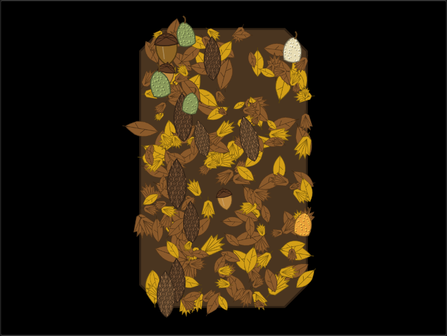
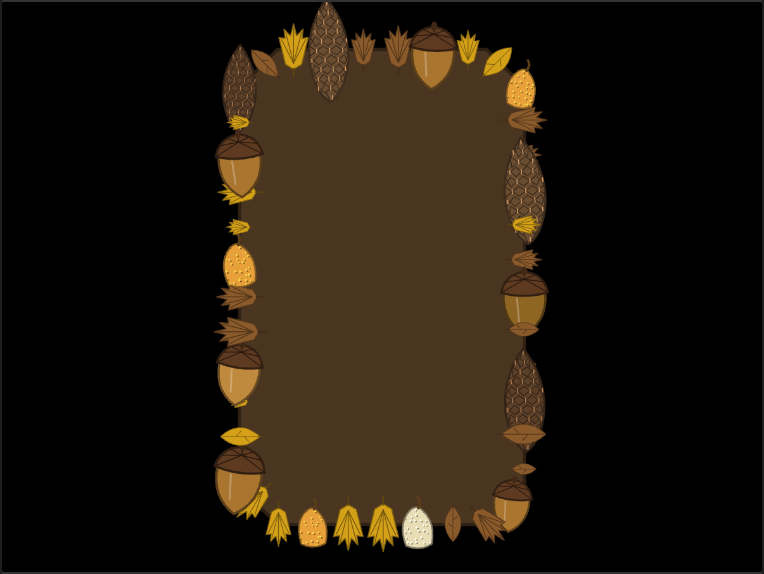
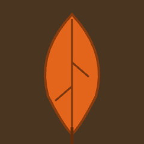
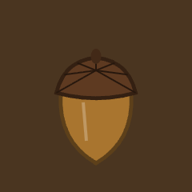
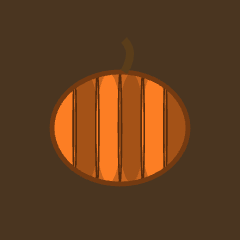
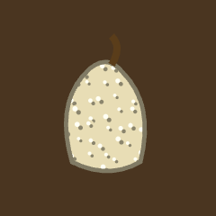
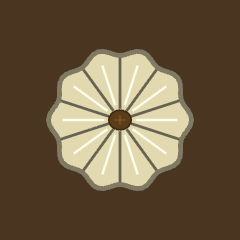
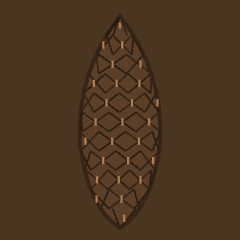

Possible New Styles
Ten candidate decorative styles for the Laser Fill Generator, picked for visual variety and laser-engraving suitability. Each entry notes how it'd likely be built relative to the app's two existing rendering families — point-only scatter (ducks, gems, coins, buttons — objects placed independently, no connecting path) and path-tracing (the pipe/maze styles, circuit board — a continuous line through a grid) — plus one that doesn't fit either cleanly. Reference images are from Wikimedia Commons, openly licensed and directly linked below each one.

Honeycomb
Path-tracingHexagonal wax cells instead of winding pipes — the same maze-grid infrastructure the pipe styles already use, just tiled hexagonally rather than following a random walk. Very laser-cut-friendly: clean geometric cells, no organic noise to fight.
Fill: packed hex tiling across the shape. Border: a single ring of hex cells strung along the perimeter, same idea as the current border-mode pipe trace.

Seashells
Point-only scatterSame shape as Gems/Coins/Buttons: a handful of distinct silhouettes (spiral shell, clam, conch, scallop) scattered and randomly rotated. A beach-toned palette pairs naturally.
Fill: jumbled pile filling the shape. Border: shells strung along the outline, same convention as Gems/Buttons today.

Autumn Leaves
Implemented Point-only scatterTwo leaf silhouettes (a pointed oval and a five-lobed maple shape) in a warm red/orange/yellow/brown palette — the same non-trace pure-random scatter as Gears (Density sets total count directly, no grid, Color Cluster disabled since nothing is spatially adjacent). Accent Count adds acorns, gourds, and pinecones mixed into the pile instead of oversized leaves — drawn on top rather than behind, since they're meant to stand out.
Fill: drifted pile of overlapping leaves with nuts/gourds/cones scattered through it. Border: leaves strung along the edge, upright acorns/gourds/pinecones as landmarks.
Rendered result (actual app output)


Element audit — one of each, isolated and labeled






Show reference photos used to visually mimic each element (30 photos)
Regular scatter — Leaf piles

_leaf_litter.jpg)
.jpg)
.jpg)


Accents — Acorns


.jpg)

Accents — Gourds


Accents — Pinecones


Feathers
Point-only scatterElongated shapes with a central quill and a rib-line texture (similar drawing complexity to the existing Gem facets or Duck bodies). Color variety comes alive here — iridescent peacock-style palettes especially.
Fill: layered, overlapping scatter. Border: feathers laid along the perimeter like a trim or headdress band.

Vintage Skeleton Keys
Point-only scatterOrnate bow/shaft/teeth silhouettes in a handful of variants, rotated and scattered. Pairs thematically with the existing Steampunk/Gears aesthetic — could even share a palette.
Fill: a jumbled keyring's worth spilled across the shape. Border: keys hung along the edge like a keyring.

Mandala / Sacred Geometry
Neither — new engineDoesn't fit the scatter or maze model — it's one centered, radially symmetric design (concentric rings + rotational repeats) rather than many independent objects or a wandering path. Would need new generation logic from scratch. Highest effort of this list, but a genuinely distinct visual result nothing else here produces.
Fill: the whole shape as one radial design, centered on its centroid. Border: less natural fit — might just repeat a radial motif at intervals instead.

Jigsaw Puzzle Pieces
Path-tracingFull-coverage tiling like the maze pipe styles, but every grid cell is a puzzle piece whose tabs and blanks must match its neighbors. Reuses the maze grid's cell adjacency, needs new edge-matching piece-shape rendering in its place.
Fill: the whole shape as one interlocking puzzle. Border: a single row of pieces traced around the edge.

Constellations / Star Map
HybridStars scatter like Gems, but a lightweight connector pass then links some neighboring pairs with thin lines — closer to the scatter model than the maze one, but needs a new "connect nearby points" step neither existing family has.
Fill: a dense star field with a handful of connected constellations. Border: stars strung along the edge, connector lines mostly skipped.

Vinyl Records
Point-only scatterStructurally close to Coins/Gems — a circular object per item — but each one renders as concentric grooves with a colored center label instead of a coin face or gem facets.
Fill: a stack/scatter of records at angles. Border: records lined up edge-on along the perimeter, like a record rack.

Celtic Knots / Rope
Path-tracingReuses the maze-grid path infrastructure directly, swapping the solid pipe stroke for a woven over-under line — the same underlying wandering path, styled as interlaced rope instead of tubing.
Fill: a woven knotwork lattice through the whole shape. Border: arguably the strongest fit in this list — a knotted rope traced around the perimeter.